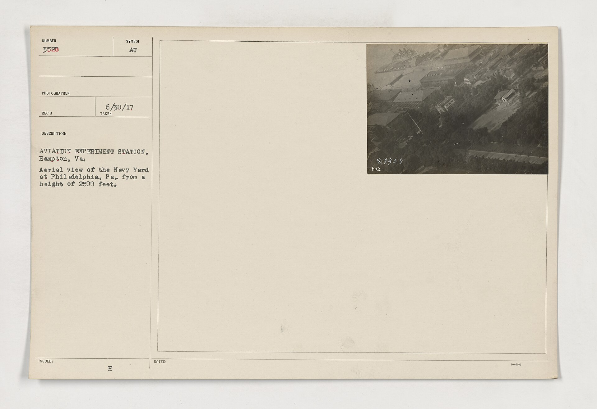

Chapter 13
The Ship of the Dead
The telegram from Washington reached the Philadelphia Navy Yard at 9: 15 on the morning of October 11, 1918—a week before the city would begin to grasp that normalcy was irrevocably broken. It bore the signature of Surgeon General Rupert Blue and the authority of the United States Public Health Service, which had spent three weeks watching the epidemic leap from military installation to military installation with the efficiency of a general staff advance. The message ordered immediate assessment of the yard’s medical capacity, direct reporting to federal headquarters, and preparation to receive transferred cases from the city’s collapsing civilian hospitals.
The yard’s commandant read it twice. The first reading established the protocol. The second registered the reversal: the same installation that had seeded Philadelphia’s epidemic—where the first sailors had staggered from receiving ships with temperatures of 104 degrees on September 19—was now designated a federal triage center, its military jurisdiction asserted over the municipal disaster it had helped create.
Three miles north, in the attic ward of Pennsylvania Hospital, a physician finished his morning rounds at 10: 30. He had been sleeping at the hospital since October 3, when the Bureau of Health’s closure orders had transformed every medical institution into an emergency barracks. The ward held forty-seven patients in a space designed for twenty. Sixteen had died since midnight. His case notes recorded the progression with mechanical precision. Cyanosis. Hemorrhage from nose and ears. Death recorded at 2: 14 a.
m. The pattern had become familiar enough that he no longer wrote the full diagnosis. Influenza-pneumonia was understood. What he noted instead was the new presence in his ward: two nurses from the Navy Nurse Corps, detached from the yard to assist the civilian emergency. They wore the same gray uniforms they had worn at the receiving ship, but their authority had shifted. They answered now to federal orders, not to Wilmer Krusen’s Bureau of Health.
The convergence was not yet visible to either man. The commandant understood that Washington had taken direct control of military medical resources; the physician understood that federal personnel were appearing in civilian wards. Neither yet grasped that the epidemic’s scale had fractured the administrative boundaries that had governed public health in Philadelphia since the city’s consolidation in 1854. The fracture would widen through October 11 and 12, as Blue’s assessment team arrived and Krusen’s local dominion encountered its first direct federal override.
The Public Health Service team reached the Navy Yard at 2: 00 p. m. On October 11. The senior officer was Dr. George W. McCoy, director of the Hygienic Laboratory in Washington, who had spent September tracking the epidemic’s appearance at Atlantic ports. His orders from Blue were specific: evaluate the yard’s capacity to serve as a regional receiving hospital; determine whether influenza cases from civilian Philadelphia could be transferred to military beds; report whether the naval installation’s isolation from the city proper made it suitable for quarantine operations. McCoy brought two assistants, a stenographer, and a supply of federal forms that requisitioned information in categories the yard’s medical staff had not used.
They found the receiving ship transformed. The vessel, a converted transport anchored in the basin since 1917, had served as initial quarantine for incoming sailors. Now its lower decks held 312 influenza patients in a space designed for 180. The ventilation system—mechanical blowers installed for tropical service—ran continuously, creating a sound that McCoy’s report described as a low industrial hum underlying all medical activity. The patients lay in hammocks slung three high, a naval accommodation that civilian hospitals could not replicate. McCoy counted seventeen bodies awaiting removal to the yard’s temporary morgue, a refrigerated shed that had stored provisions six weeks earlier.
The yard’s medical officer, a lieutenant commander, met McCoy on the vessel’s quarterdeck. Their exchange was recorded in McCoy’s official report. The medical officer stated that the yard had admitted 847 influenza cases since September 19, with 214 deaths. The current census was 412 patients, including transfers from the Army’s Camp Dix and Camp Meade. McCoy asked whether civilian cases had been accepted. The medical officer replied that the commandant had refused such requests on September 27, citing military jurisdiction. The Bureau of Health had not pressed the point. Now, with Blue’s telegram, the point was pressed from above.
McCoy’s assessment, filed at 8: 00 p. m. On October 11, recommended immediate conversion of the receiving ship and two auxiliary barracks ships to full influenza service. It proposed accepting civilian transfers to the limit of naval capacity. It noted that the yard’s isolation—surrounded by water, accessible only by guarded causeway—made it uniquely defensible against the spread of infection to the surrounding municipality, while equally suited to concentrate and treat cases from that municipality. The recommendation carried Blue’s authority and bypassed Krusen entirely.
The bypass was not yet known at the Bureau of Health’s offices on South Penn Square. At 3: 00 p. m. On October 11, Krusen convened his daily staff conference with the directors of the city’s major hospitals. The minutes show a meeting consumed by arithmetic: 1, 847 new cases reported in the previous twenty-four hours, 612 deaths, remaining bed capacity estimated at 340. Thomas W. Buckman of the Philadelphia Hospital reported that his institution had begun refusing admission to patients without private transportation; the ambulances could not keep pace. Joseph H. Leidy of the University Hospital stated that his nursing staff had suffered eleven deaths and twenty-three incapacitations since October 5. Krusen recorded these figures without comment, then moved to the agenda item that occupied him: the federal government’s refusal to release emergency medical supplies from Fort Mifflin until proper requisition channels were observed.
The channels were military. Blue’s office controlled the supplies. Krusen’s requests had moved through the War Department’s medical division, where they encountered the same jurisdictional barrier that McCoy’s team had just dissolved: military installations answered to federal authority, not to municipal health officers. The minutes record Krusen’s statement that coordination with Washington remains in progress. They do not record his knowledge that coordination had already been redefined.
The redefinition reached Krusen at 9: 00 a. m. On October 12, when the commandant telephoned to inform him that the receiving ship would begin receiving civilian transfers at noon, per direct order of the Surgeon General. The call was brief. The commandant, a career officer who had commanded the yard since 1916, offered no negotiation. Krusen’s response was not recorded by either party. The Bureau of Health’s files contain only a memorandum, dated October 12 and initialed by Krusen, noting that naval medical facilities are henceforth operating under separate federal authority. The memorandum was not distributed to hospital directors. The appearance of coordination was maintained.
The appearance dissolved in practice. At noon on October 12, the first civilian ambulance reached the Navy Yard causeway. It carried four patients from the Pennsylvania Hospital’s overflow ward, selected by the physician according to criteria that mixed medical priority with practical desperation: cases severe enough to require institutional care, stable enough to survive transport, lacking family resources to arrange private nursing. The Navy Yard’s shore patrol stopped the ambulance at the guardhouse. For seventeen minutes, according to the driver’s log, the driver argued with a petty officer who had received no orders regarding civilian admission. The petty officer telephoned the receiving ship. The medical officer confirmed acceptance. The ambulance proceeded.
The seventeen-minute delay was not repeated. By 6: 00 p. m., fourteen civilian ambulances had made the crossing. The medical officer’s evening report recorded forty-seven civilian admissions, with three deaths en route. The dead were returned to the city for burial; the yard’s temporary morgue, already strained by naval casualties, could not accommodate municipal bodies without administrative designation that the commandant declined to request. The jurisdictional boundary held at death, even as it dissolved in treatment.
McCoy observed this first day of integrated operation from the vessel’s bridge. His supplemental report to Blue, filed October 13, described a system improvised under emergency conditions, with evident friction between naval and civilian medical protocols. The friction was specific: civilian physicians expected to follow their patients; naval regulations restricted shore personnel to designated zones. Civilian nurses sought to maintain their own supply chains; naval logistics operated through military procurement. The receiving ship’s medical staff had not anticipated the volume of civilian cases requiring immediate surgery for secondary infections; their operating theater, designed for trauma, lacked the instruments for thoracic drainage that pneumonia demanded.
McCoy recommended federal appointment of a coordinating medical officer with authority over both naval and civilian personnel at the yard. Blue approved the recommendation on October 14. The appointment went to Dr. Alexander C. Abbott of Johns Hopkins, who reached Philadelphia on October 15 with written authority to requisition supplies, redirect personnel, and report directly to Washington on all medical operations at the installation. Abbott’s arrival completed the federal assumption of control that McCoy’s assessment had initiated. The Navy Yard had become, in four days, a federal hospital operating within municipal territory, its authority derived from the epidemic’s scale rather than from any preexisting administrative framework.
Krusen learned of Abbott’s appointment through the evening newspapers on October 15. The Evening Public Ledger reported the arrival of federal medical director A.C. Abbott, M.D., to supervise naval influenza operations, without mention of civilian coordination. The omission was technically accurate: Abbott’s formal title was Director of Naval Medical Operations, Philadelphia Station. His actual authority, defined by Blue’s written instructions, extended to all medical personnel and facilities at the United States Navy Yard, including those engaged in treatment of persons transferred from civilian institutions. The phrase constructed a jurisdiction where none had existed.
Krusen’s response, preserved in his personal papers at the Historical Society of Pennsylvania, was a letter to Mayor Thomas B. Smith dated October 16. The letter argued that the assumption of federal control over municipal medical resources, however prompted by emergency conditions, establishes a precedent that may compromise the city’s autonomy in future health administration. It requested Smith’s support in a formal protest to the War Department. Smith’s reply, if any, has not survived. The protest was not made. The epidemic’s arithmetic had rendered autonomy theoretical: 759 deaths on October 15, 837 on October 16, the peak not yet reached.
The peak, when it came, would find the Navy Yard operating as a separate medical city within Philadelphia’s boundaries. Abbott’s daily reports to Blue recorded the transformation in institutional language. On October 11, the yard had treated naval personnel and authorized military dependents. By October 17, it treated all persons referred by competent medical authority, classification pending. The classification system—naval, military, civilian—determined burial arrangements, notification procedures, and the destination of personal effects. It did not determine medical priority. Abbott’s triage protocols, implemented October 14, assigned beds by severity of illness alone. A naval apprentice and a civilian clerk received identical assessment; their classifications determined only what happened after death.
This equality in treatment, inequality in aftermath, characterized the yard’s operation through the week of October 12–19. The receiving ship’s patient census peaked at 487 on October 17, with civilian cases comprising 38 percent of the total. The auxiliary barracks ships, converted to hospital use on October 13–14, held another 612 patients between them. The combined naval-civilian mortality for the week was 147 deaths—lower than the rate in civilian hospitals because of the yard’s isolation, its uninterrupted supply of fresh water, and the federal requisition of oxygen tanks that remained unavailable elsewhere in Philadelphia.
The federal advantage was not secret. On October 16, the physician from Pennsylvania Hospital wrote to Abbott requesting transfer of his sister, herself a nurse who had contracted influenza while volunteering at the hospital’s overflow ward. The letter, preserved in Abbott’s files, stated that naval facilities offer resources unavailable in municipal institutions, and his sister’s condition warranted access to those resources regardless of technical jurisdiction. Abbott approved the transfer. The sister survived. The letter became, in subsequent Bureau of Health memoranda, evidence of poaching—the diversion of qualified civilian patients to federal facilities while municipal hospitals remained overwhelmed.
The accusation missed the structural point that McCoy’s reports had documented: the federal assumption of control had occurred because municipal institutions had collapsed, and the collapse had occurred because the epidemic’s scale exceeded any local authority’s capacity. The Navy Yard’s transformation into a regional triage center was not a seizure but a filling of vacuum. The vacuum was jurisdictional as much as medical. Krusen’s Bureau of Health had authority over Philadelphia’s public health; it lacked authority over military installations, federal personnel, or interstate supply chains. When these became essential to survival, authority followed function.
The pattern would repeat in other cities. Boston, where the second wave had first appeared in August, saw similar federal assumption at the Navy Yard and Camp Devens. The second wave began in the second half of August 1918, probably spreading to Boston, Massachusetts and Freetown, Sierra Leone, by ships from Brest, where it had likely arrived with American troops or French recruits for naval training. From the Boston Navy Yard and Camp Devens, about 30 miles (48 km) west of Boston, other U.S. military sites were soon afflicted, as were troops being transported to Europe. The federal structure that Blue’s office imposed established a parallel medical administration that operated where municipal systems failed. The parallel was not planned; it emerged from the collision of epidemic scale with administrative boundary.
In Philadelphia, the collision produced a specific institutional residue. On October 18, Abbott convened a conference with Krusen, the commandant, and representatives of the major civilian hospitals. The meeting’s purpose, stated in Abbott’s preliminary memorandum, was to regularize procedures for patient transfer and resource sharing between federal and municipal facilities. The memorandum assumed federal priority: naval medical needs would be met first, civilian transfers accepted as capacity permits. Krusen’s counter-proposal, recorded in the meeting minutes, insisted on proportional allocation of resources based on population served. The negotiation produced no agreement. The epidemic’s peak, passing through the city that week, made agreement unnecessary. Both sides continued to operate according to emergency improvisation.
The improvisation had costs that appeared only in retrospect. The Navy Yard’s mortality records, compiled by Abbott’s staff and submitted to Blue on October 31, listed 312 deaths for October 11–25: 189 naval personnel, 123 civilians. The civilian deaths were not included in Philadelphia’s official mortality returns for the period; they had occurred on federal property, under federal jurisdiction, and were reported to federal authorities. Krusen’s weekly summaries to the Pennsylvania State Department of Health noted additional unclassified deaths without specifying their location or number. The city’s official death toll for the week of October 12–19 was therefore understated by approximately 3 percent. The understatement was not concealment; it was category error. Federal deaths were not municipal deaths. The distinction held in record-keeping even as it dissolved in practice.
The dissolution extended to burial. The Navy Yard maintained its own cemetery at League Island, expanded in October to accommodate influenza casualties. Civilian bodies transferred from the receiving ship or barracks ships were returned to the city unless families requested naval interment and signed waivers of municipal burial rights. Most families, desperate for any resolution, signed. The League Island cemetery records for October 1918 show 87 civilian burials among 156 total—individuals who died in federal facilities, under federal care, and were buried on federal land without appearing in Philadelphia’s mortality statistics or its overwhelmed potter’s field registers.
This administrative shadow—deaths recorded in one jurisdiction and invisible in another—would complicate the post-epidemic accounting. When the Philadelphia City Council convened its influenza investigation in November 1918, Krusen’s testimony emphasized the federal assumption of naval facilities as evidence that higher authority recognized the inadequacy of local resources. The council’s majority report accepted this framing. A minority dissent, submitted by Councilman William S. Vare, argued that the diversion of civilian patients to naval facilities, without corresponding assumption of municipal costs, represents an unacknowledged federal subsidy extracted from Philadelphia’s emergency. The dissent was politically motivated—Vare opposed Mayor Smith’s administration—but its factual premise was accurate. The federal government had absorbed costs that would otherwise have fallen on municipal institutions, and had done so without formal acknowledgment or budgetary transfer.
The absorption was temporary. On November 11, 1918, Abbott received orders to demobilize the emergency medical structure and return the Navy Yard to standard operations. The receiving ship resumed transport duties in December. The auxiliary barracks ships were decommissioned and sold for scrap in 1919. The League Island cemetery continued to receive burials through 1920, then closed; its records were transferred to federal archives in 1935. Abbott’s final report to Blue, dated November 30, 1918, summarized the operation in language that erased its improvisational origins: The Philadelphia Naval Station successfully integrated federal and civilian medical resources during the influenza emergency, demonstrating the adaptability of military health infrastructure to national crisis.
The summary was true as description and false as explanation. The integration had not been planned; it had been forced by collapse. The adaptability had not been demonstrated; it had been discovered under pressure. The federal structure that Blue’s office imposed on Philadelphia’s epidemic was not a model for future coordination but a record of jurisdictional failure—the moment when municipal authority proved insufficient and national authority filled the gap without admitting the extent of its assumption.
This gap, between administrative appearance and functional reality, characterized the epidemic’s management at every level. Krusen maintained the forms of local control while federal officers directed essential operations. Blue maintained the forms of advisory coordination while his appointees assumed operational command. The city maintained the forms of statistical record while hundreds of deaths disappeared into federal categories. The forms preserved legitimacy; the functions determined survival.
The preservation had consequences beyond October 1918. When Philadelphia faced its next public health emergency—the polio epidemic of 1919—it did so with a Bureau of Health whose authority had been demonstrated as limited and a federal presence whose intervention remained undefined. Krusen requested naval assistance again in September 1919; the commandant refused, citing operational requirements that had not existed in 1918. The precedent of 1918 worked only once, when the emergency was sufficient to override institutional resistance.
The resistance, once overridden, left traces in the physical city. The League Island cemetery’s civilian section, eighty-seven graves from October 1918, was transferred to municipal maintenance in 1923 when the Navy abandoned the site. The graves were unmarked; the transfer records listed only numbers. In 1935, when federal archives requested documentation for historical purposes, Philadelphia’s Department of Public Works reported that no separate identification of naval and civilian interments at League Island is available. The categories had dissolved in earth.
The dissolution completed a process that began with McCoy’s assessment on October 11. The epidemic had transformed the Navy Yard from a source of infection to a site of treatment, from military reservation to federal medical city, from jurisdictional certainty to administrative improvisation. Each transformation had been necessary and each had been incomplete. The yard’s receiving ships had become hospitals; their mortality records had become federal documents. The sailors who brought influenza to Philadelphia in September were buried beside the civilians they infected in October, their common graves unmarked by the distinctions that had governed their lives.
The unmarked graves remained when the Navy Yard returned to its ordinary functions. The receiving ship sailed for other duties. The federal medical director returned to Baltimore. The commandant resumed his jurisdiction over a military installation that no longer held civilian patients, no longer operated under emergency authority, no longer served as the city’s hidden hospital. What remained was the ground itself: eighty-seven civilian dead interred on federal land, their names recorded in Washington, their location forgotten in Philadelphia, their existence absent from the mortality returns that Krusen compiled and the city council reviewed. The epidemic’s administrative innovations had saved lives and dissolved boundaries; its administrative aftermath restored the boundaries and erased the lives from local memory. The ship of the dead had sailed. The ditch remained to be dug.
